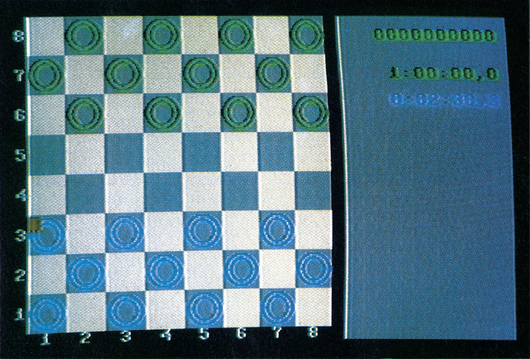
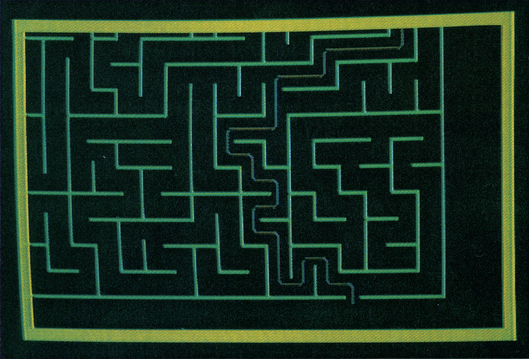
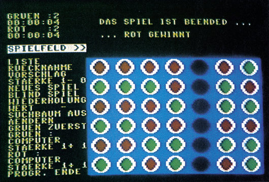

Auflösung: Knobel-Wettbewerb
Es ist soweit: Die drei Gewinner des Knobel-Wettbewerbs aus Ausgabe 8/86 stehen fest. Drei tolle Programme, die dem Benutzer Freude bereiten. Sehen Sie sich die Ergebnisse an!
Der in Ausgabe 8/86 ausgeschriebene Knobel-Wettbewerb stieß auf erfreulich hohe Resonanz. Unter den vielen Einsendungen hat die Redaktion die Gewinner ermittelt. Wir bewerteten nach Spielstärke, Motivation und grafischer Gestaltung des Programms.
Wir freuen uns nun, Ihnen drei wirkliche Top-Programme präsentieren zu können. Den Sieger, ein Dame-Programm, können Sie in der nächsten Ausgabe als Listing des Monats abtippen. Da es noch kein Programm in dieser Qualität für den C 64 auf dem Markt gibt, haben wir es kurzerhand zum Listing des Monats gemacht. Wir finden, die Autoren haben die 2000 Mark ehrlich verdient. Den zweiten und dritten Sieger finden Sie neben der Anleitung auf der Programmservice-Diskette zu dieser Ausgabe. Doch nun zur Vorstellung der Gewinner:
Den ersten Platz belegen Alexander und Rudolf Huber aus München mit ihrem Programm »Dame C 64« (Bild 1). Uns gefiel vor allem die gute grafische Aufmachung und die Anzahl der unterschiedlichen Spielstärken des Programms. So sind verschiedene Schwierigkeitsstufen (unter anderem auch ein Turniermodus) enthalten, in dem der Computer recht stark spielt. Wahlweise können auch Spielstellungen vorgegeben und mit diesen dann weitergespielt werden. Der Preis für dieses gelungene Strategiespiel: 2000 Mark.

Als zweiten Sieger wählten wir einen Labyrinth-Generator, der den Lösungsweg selbst sucht (Bild 2). Es läßt sich am Bildschirm sehr schön mitverfolgen, welche Wege der sich durchs Labyrinth schlängelnde »Wurm« einschlägt, bis er endlich am Ziel ist. Nachdem der »Wurm« seinen Weg gefunden hat, läßt sich die Strecke mit Hilfe des Joysticks sehr schön nachvollziehen. Andreas Perlitz aus Windsbach kann die ausgesetzte Prämie von 500 Mark nun sein eigen nennen.

Der dritte Gewinner ist Oliver Stiller aus Köln. Er schickte uns eine grafisch sehr schöne Version des Spiels »Vier gewinnt« (Bild 3). Auch hierbei entpuppte sich der Computer als starker Gegenspieler. Oliver Stiller erhält den ausgesetzten Preis von 250 Mark.

Da die Programme leider zu umfangreich zum Abdrucken sind, haben wir das Labyrinth- und das »Vier gewinnt«-Programm mit auf die Programmservice-Diskette gepackt. Wir danken allen Einsendern für die rege Beteiligung.
(dm)